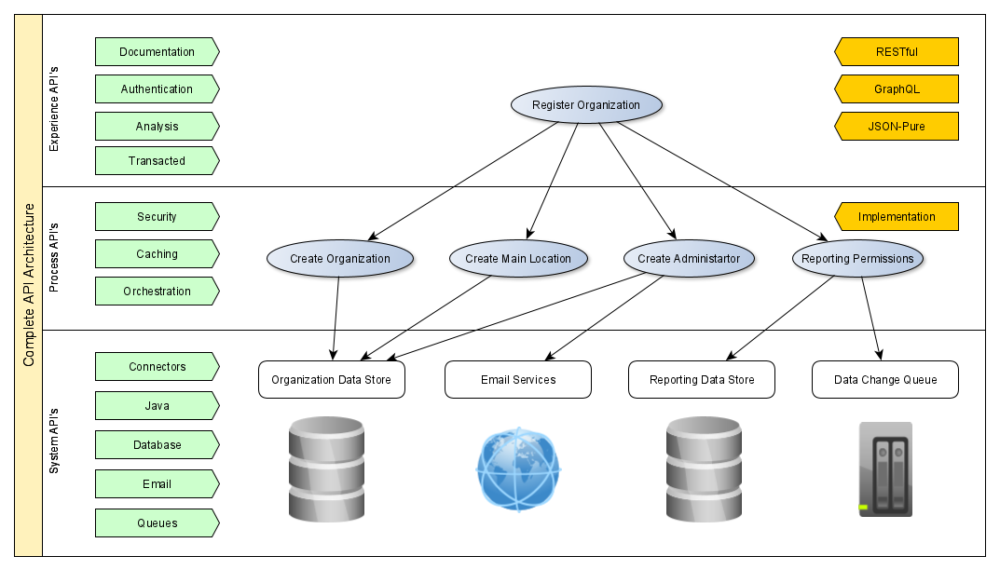

Designing Great API's
The way we are building software is changing. Just as we want to provide end users a good user experience (UX), we must build an API that is optimized for developer experience (DX).
There are a few core goals that should be followed:
- The API should always be on (99.9% uptime or higher)
- The API should be lightning fast (keep response times low)
- The API should seamlessly update (no breaking changes)
- The API should expose building blocks, not static solutions
This document is a group of concepts ive found while doing research on API's and are the key concepts most important to me.
API Levels
Most API's can be broken down into multiple teirs of reusability. The interface (experience api's) is used to provide customers with a developer friendly set of end points, the logic (process api's) layer is used to implement the business logic and the connector (system api's) layer is used to integrate with databases, cloud services, queues, etc). This seperation helps break down the user stories that give a good user experience, into simplier system integration points.
System API's provide a means for insulating the data consumers from the complexity or any changes to the underlying systems. Once built, many consumers can access data without any need to know the details of the underlying systems. System API's are typically fine-grained, business process-independent, and highly reusable.
Process API's provide a means of combining data and orchestrating multiple System API's for a specific business purpose. They are often used to construct a business entity which attributes are managed in multiple systems of records by different business functions (CRM, Emailing, Document Management Stores, etc.).
Experience API's are similar to Process API's in that they composite the content, features, and functionality of several other API's. However, unlike Process API's, Experience API's are more specifically tied to a unique business context, and they project data formats, interaction timings, or protocols (rather than process or create them) into a specific channel and context.
An analogy of this would be a person going to the store to buy bread (experience). That user requires multiple steps for payment and following a recipe to bake it (process). That recipe is using multiple natural resources produced by farmers (system).
Documentation
You can prove your API's worth in the docs themselves by allowing users to test a cURL response in the docs using the examples from a RAML file.
Make sure developers can figure out the parameters of the API's SDK integration as quick as possible. This is meant to save coding time and elimate any mental roadblocks while learning how your API functions within their framework of choice. With a simple NodeJS, Python or Java SDK, developers should be able to build a full-featured integration in a fraction of the time.
Having multiple ways to access information in an API will benefit users as well as a RESTful URL could be used to download a PDF or viewable item, GraphQL could be used to integrate tombstone information about customers and their reports and Pure JSON could be used to send large BLOBs of data to us for processing. Having more then one method is helpful to the client, but also more for us to support.
Treat our API docs like the homepage of a website
Think of our API docs as the front page of our website. It's the central place users will bookmark and start using; it should be user-friendly, intuitive, and follow a logical flow.
The API docs need to be inherently discoverable and easy to use, just like the API itself. The docs must be easy to navigate with a clear table of contents and the main uses cases with examples right at the start.

Its important to ensure the API is usable, your interface is only as usable as your documentation, and your documentation is only helpful when its easily discoverable. The documentation should be organized in a consistent way that is searchable and provide contextual coverage across the entire API integration process.
Change is Inevitable
When building an API, change is inevitable. SOAP API's lead the way to REST API's, and REST API's are the precursor to Graph API's. JSON is the industry leading file format for today's API's but this is changing as technology develops (things are moving towards JSON-LD).
Its important to build in versioning from Day 1. Taking fairly strict approach to change where it creates a new version of the API every time a change is necessary and changing nothing about the old version of the API will help keep our customers using our API's. Make sure that you communicate changes early and often to ensure your customers can prepare for changes and that no changes disrupt the end users services. Using the basic major/minor sementaic versioning in your url can help.
Treat the API as a Product
A key factor when starting with any sort of development is the notion of the product. It defines the stand-alone entity that exposes useful functionality and benefits to the market. It is no easy task to design and implement an API that is easily consumable, scalable, properly documented, and secured without having a strong sense of responsibility and ownership in the process.
Filtering and Pagination
One common mistake when developing an API is not offering a way to filter or paginate results. When you expose an API that returns a list of items that can change over time, you need to establish a pagination strategy. The reason is simple. Clients, especially mobile ones, cannot view hundreds of list items at once. For example, you can show the first 10. If your API returns the whole database listing for each request, then a lot of resources are being wasted and the performance degrades substantially.
Sorting is also a very important feature for any API endpoint that returns lots of data. For some endpoints without pagination, a simple search could return millions or billions of results resulting in API calls that take minutes or even hours. To enable sorting add a sort parameter and add the ability to specify ascending or descending order.
Secure the Endpoints
Security should not be neglected. Any breach can have a catastrophic consequence and lead to serious legal issues. Security controls need to be established early in the development process and your API must be accessed by an external vendor to ensure it will not be maliciously exploited. The CIA triad of security applies with the following:
- Confidentiality is achieved by adding proper authentication controls that provide a means for your system to know who is accessing information or sites. OAuth2 and JWT offer a practical and secure means of authenticating controls. HTTPS must be used at all public endpoints to ensure secure communications.
- Integrity is achieved by using access controls and authorization strategies to prevent the tampering of data from unauthorized users. Role-Based Authorization Control (RBAC) provides a good option.
- Availability is achieved by establishing rate limits, partial responses and caching, in order to prevent extensive usage of API resources or even servers taken down by infinite loops.
Top API Security Threats
- Injection Attacks - dangerous code is embedded into an unsecured software to stage an attack, most notably SQL injection and cross-site scripting.
- DoS Attacks - the attacker pushes an enormous amount of messages requsting the server or network into a non-functional state.
- Broken Authentication - missing or inadequate authentication can result in an attack whereby JSON web tokens, API keys, passwords etc can be bypassed or compromised.
- Sensitive Data Exposure - whenever an application is unable to properly secure sensitive data, private information can be retrieved by an attacker.
- Broken Access Control - when authentication is involved, web applications allow access to function and content to certian people not everyone, missing access controls can give information out to the attacker.
- Parameter Tampering - happens when a harmful website, program, blog or email makes a user's internet browser carry out an unnecessary action on an authorized site.
- Man In The Middle Attack (MITM) - an attacker is secretly altering, intercepting or relaying communications between two interacting systems and intercepts the private data passed between them.
- Lack of TLS - any website running on http and not https is practically equivalent to handing out open invations to hackers.
Use Monitoring and Reporting
While developing and testing your API plays a big part in the process, the real work does not end here. You need to continue providing support, even before the code is deployed to production. If something goes wrong, the right people need to be notified with actionable information, in order to respond by any means necessary. This constitutes a proactive approach when developing your API. If you keep things at bay, when endpoint issues emerge, you can prevent any catastrophic failures.
How to Prevent DDoS Attacks
There are different ways we can prevent DDoS attacks; we can do IP blacklisting to avoid traffic from sources of attack, rate limit your application to prevent it from being overwhelmed, or use both of them to provide multiple layers of security.